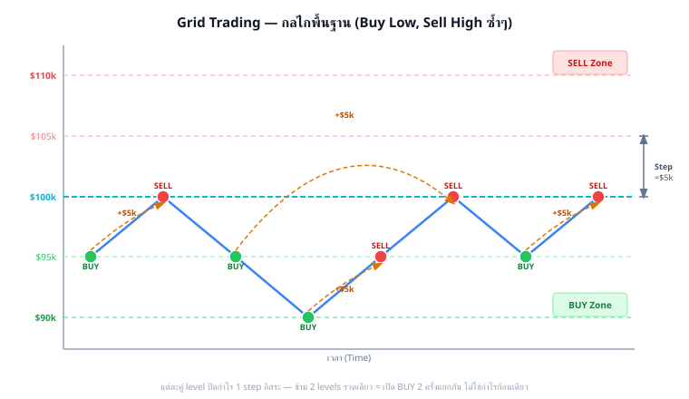

ลองนึกภาพคุณตั้ง "กับดัก" ราคาไว้หลายระดับ:
ผลลัพธ์: ทุกครั้งที่ราคา แกว่งขึ้น-ลง ผ่านระดับ grid หนึ่งคู่ คุณได้กำไร 1 step โดยอัตโนมัติ

กลไก Grid: BUY ที่ระดับล่าง → SELL ที่ระดับบน = กำไรต่อรอบ ทุกครั้งที่ราคาแกว่งผ่าน
แต่ละคู่ level ปิดกำไรของตัวมันเองเท่านั้น — ถ้าราคาตกจาก $105,000 ลงไป $95,000 รวดเดียว (ข้าม 2 levels) grid จะ BUY ที่ทุก level ที่ผ่าน (สมมติมี order/capital พอ) คือ BUY ที่ $100,000 และ BUY ที่ $95,000 แยกกัน 2 order — ไม่ใช่ BUY แค่ level ปลายทางเดียว
ตอนราคาขึ้นกลับ กำไรที่ได้ก็เป็นผลรวมของ 2 รอบอิสระ ($5k + $5k) ไม่ใช่กำไรก้อนเดียวข้าม step ($10k ในเทรดเดียว)
Setup พื้นฐาน: BTC/USDT อยู่ที่ $100,000 · Grid 5 ระดับ · Step = $2,000 · ขนาด order = 0.01 BTC/ระดับ (≈ $1,000/level ที่ BTC=$100k — ประมาณ 1% ของ capital $100k ต่อ level)
| ระดับ | ราคา | Action | กำไรถ้า Fill ทั้งคู่ |
|---|---|---|---|
| +2 | $104,000 | SELL | +$20 (0.01 BTC × $2k) |
| +1 | $102,000 | SELL / BUY | |
| 0 | $100,000 | ราคาปัจจุบัน | — |
| -1 | $98,000 | BUY / SELL | +$20 (0.01 BTC × $2k) |
| -2 | $96,000 | BUY |
Capital ที่ต้องใช้: ซื้อครบทุก level ล่าง = 0.01 × ($98k + $96k) = $1,940 (ไม่นับ margin)
| ตัวแปร | คำอธิบาย | ตัวอย่าง |
|---|---|---|
| Zone (เขต) | ช่วงราคาที่ grid ทำงาน [ล่าง, บน] | $90,000 – $110,000 |
| Step (ก้าว) | ระยะห่างระหว่าง grid level | $2,000 (2% ของราคา) |
| N (จำนวน level) | = (Zone_top − Zone_bottom) / Step | (110k−90k)/2k = 10 levels |
| Q (ขนาด order) | จำนวน BTC ต่อ order ต่อ level | 0.01 BTC ≈ $1,000/level |
Grid ให้ equity curve ราบเรียบที่สุด — total return ใกล้เคียงกัน แต่คุณภาพการเดินทางต่างกันมาก
| มิติ | Grid Trading | Buy & Hold | DCA |
|---|---|---|---|
| กำไรหลัก | Cashflow จากการแกว่ง | Capital gain (ราคาขึ้น) | ซื้อถัวเฉลี่ย ขายเมื่อพร้อม |
| ต้องการ trend? | ไม่ต้อง (ต้องการ sideway) | ต้องการ (uptrend) | ได้ประโยชน์ถ้า uptrend |
| Drawdown | น้อย (ถ้า zone ออกแบบดี)‡ | สูงมาก (−30% ถึง −70%) | ปานกลาง |
| ความซับซ้อน | กลาง (ต้องออกแบบ zone+step) | ต่ำ (ซื้อและรอ) | ต่ำ-กลาง |
| ดีที่สุดเมื่อ | ตลาด sideway-choppy (H < 0.5)† | Bull market ยาว | ตลาดผันผวน ระยะยาว |
| แย่ที่สุดเมื่อ | ตลาด trending แรง (H > 0.6)† | Bear market ยาว | Sideways แบบไม่ขึ้น |
H คือตัววัดว่าราคา "มีแนวโน้มกลับสู่ค่ากลาง" มากน้อยแค่ไหน: H < 0.5 = mean-reverting (ขึ้นแล้วมักลง ลงแล้วมักขึ้น — grid ทำงานดี) · H = 0.5 = random walk · H > 0.5 = trending (ขึ้นแล้วมักขึ้นต่อ — grid ระวัง)
วิธีคำนวณ H และการ integrate เข้า state machine อยู่ใน Part 4: Regime Detection
Grid สมมติว่าตลาดแกว่ง (mean-reverting) — ถ้าราคา ดิ่งลงไม่กลับ หรือ ทะยานขึ้นไม่หยุด grid จะขาดทุนจาก inventory ที่ค้างอยู่
ตัวอย่าง: BTC $100k → $60k โดยไม่กลับ → grid ซื้อตลอดทาง → inventory ค้าง → unrealized loss สูง แต่ถ้า Close System ออกแบบดี capital ไม่หมดจนกว่าจะถึง floor (ดู Part 1A)
"Drawdown น้อย" ในตารางเปรียบเทียบด้านบนวัดจาก equity curve ที่ realized (grid ปิดกำไรเป็น step ๆ ตลอด) แต่ไม่ได้รวม unrealized loss ของ inventory ที่ยังค้างอยู่ตอนราคาต่ำ — ถ้าตลาด trend ลงแรง (H > 0.6) drawdown ที่แท้จริงอาจไม่น้อยเลย เพราะ capital ถูกทยอยดึงเข้าไปซื้อของถูกลงเรื่อยๆ (fully deployed) ต่างจาก buy & hold ที่แค่ถือ position เดียวคงที่
นี่ไม่ได้หมายความว่า Enhancement ไม่มีค่า — ตรงกันข้าม:
สิ่งที่ไม่ควรคาดหวัง: indicator จะทำให้ P&L เพิ่มขึ้น 50% จาก grid ปกติ — นั่นคือ overfitting
ลองสมมติ: ทุก 8 ชั่วโมง โยนเหรียญ → หัว = เปิด grid, ก้อย = หยุด grid
ผลที่ได้: กำไร ≈ 50% ของ grid ที่รันตลอด 24 ชั่วโมง (เพราะเปิดแค่ครึ่งเวลา) — แต่ DD ลดลงด้วย
ถ้า ADX filter ทำได้ดีกว่าโยนเหรียญ → มีค่า | ถ้าเท่ากัน → ใช้ random filter ประหยัดเวลา backtest
ซื้ออย่างเดียว ขายเพื่อ take profit เท่านั้น — ไม่มี SL ยกเว้น 0 หรือ give-up point
เหมาะกับ: ผู้ถือ long-term view, ต้องการ passive income จากการแกว่ง
→ Part 1A
มีทั้งฝั่งซื้อ (inventory long) และฝั่งขาย (inventory short) — profit จากทั้งขาขึ้นและขาลง
เหมาะกับ: ตลาด choppy, ผู้ใช้ perpetual futures
→ Part 1B
ถือ Spot BTC ไว้ + short perp เป็น hedge — เก็บ funding rate และกำไรจาก grid
เหมาะกับ: ผู้ถือ spot asset อยู่แล้ว อยากลด risk
→ Part 1C
ไม่ว่าจะเป็น Grid แบบไหน ต้องตัดสินใจ 3 อย่าง:
กำหนดช่วงราคา [ล่าง, บน] ที่ grid จะทำงาน — Zone กว้างเกินไป = capital ล็อคมากเกินไป | Zone แคบเกินไป = ราคาออกนอก zone บ่อย
เครื่องมือ: Donchian Channel (price-based), Bollinger Band (σ-based), ATR multiple, Monte Carlo + Block Bootstrap
→ ดูรายละเอียดใน Part 3
กำหนดระยะห่างระหว่าง grid level — Step เล็ก = รอบเยอะ แต่ inventory risk สูง | Step ใหญ่ = รอบน้อย แต่ fill ช้า
เครื่องมือ: ATR-based step (Step ≈ k × ATR), Keltner Channel, IV-adaptive step
→ ดูรายละเอียดใน Part 3
กำหนดจำนวนเงินที่ต้องใช้ต่อ level และ total capital ที่ reserve ถึง floor — Capital ไม่พอ = margin call ก่อน grid เต็มระบบ
เครื่องมือ: Close System formula, Kelly sizing, Zone Waterfall (Active/Standby/Floor)
| Part | เนื้อหา | สิ่งที่จะทำได้หลังอ่าน |
|---|---|---|
| 1A | Close System + Zone Tricks + Soft Martingale | ออกแบบ grid ที่ไม่ bust ไม่ว่าราคาจะลงแค่ไหน (ถ้า capital พอ) |
| 1B | Buy-and-Sell (Bidirectional) | ทำกำไรทั้งขาขึ้นและขาลง บน perpetual futures |
| 1C | Grid Hedge | ป้องกัน inventory risk ด้วย perp short, เก็บ funding rate ไปด้วย |
| 2 | Bloating + Step Pyramid | จัดการ "grid บวม" และเพิ่ม step แทน size ในช่วง trend |
| 3 | Volatility-Adaptive Zone+Step | ปรับ zone และ step ตาม ATR, IV, Donchian, Keltner อัตโนมัติ |
| 3B | Indicator Filter + Order Accumulation | ใช้ MA/EMA/ADX กรอง entry, รวบ order ที่พลาดด้วย signal |
| 4 | Regime Detection | รู้ว่าตอนนี้ตลาด mean-revert หรือ trend → ตัดสินใจ grid on/off |
| 5 | Kelly + Risk Management | คำนวณขนาด position ที่ optimal, ป้องกัน ruin |
| 6 | Pair Grid | เทรด spread BTC↔ETH หรือ inverse correlation |
| 6B | Grid Snowball + DCA | ทบกำไร 3 แบบ, โอน cashflow ไปสร้าง wealth portfolio |
| 7+7B | Advanced + Framework+Indicator | IV-adaptive, funding-adaptive, Grid เป็น framework + indicator เป็น executor |
| 8 | 5 Supplementary Strategies | Trend follow, Funding Arb, CSP, Strangle, Stat Arb เสริม Grid |
| 9 | Python Implementation | เขียน live bot บน Bybit ตั้งแต่ WebSocket ถึง state machine |
คำตอบ:
กำไรก่อน fee = 0.01 BTC × $2,000 = $20
Fee: ทุก side = 0.1% × (0.01 BTC × $100k) = 0.1% × $1,000 = $1 × 2 sides = $2 fee รวม
กำไรสุทธิ = $20 − $2 = $18 ต่อรอบ
คำตอบ:
Buy-and-Hold ต้องการให้ราคา "สูงขึ้น" จาก entry เพื่อกำไร — ถ้าตลาด sideway ราคากลับมาจุดเดิม = กำไร 0%
Grid Trading ทำกำไรจากการ "แกว่ง" — ทุกครั้งที่ราคาลงมา BUY และขึ้นไป SELL ผ่าน 1 step = กำไร $18
ถ้าราคาแกว่ง 10 รอบ (แต่จบที่ราคาเดิม) → Grid ได้ $180 | B&H ได้ $0
นี่คือ alpha ที่ Grid มีและ B&H ไม่มี: ดักจับ oscillation
คำตอบ:
Step เล็กลงครึ่งหนึ่ง → N (จำนวน level) เพิ่มเป็น 2 เท่าในช่วง Zone เดิม
Capital: เพิ่มขึ้น (ต้องใส่ทุนที่ทุก level เพิ่มขึ้น 2 เท่า)
Cashflow: กำไรต่อรอบ = $10 (ครึ่งหนึ่ง) แต่จำนวนรอบเพิ่มเป็น 2 เท่า → cashflow รวม ใกล้เคียงเดิม
Risk เพิ่ม: inventory สะสมเร็วกว่าถ้าราคาดิ่งต่อเนื่อง (ซื้อทุก $1k แทน $2k)
สรุป: Step เล็ก ≠ กำไรมากขึ้น แต่ = inventory risk สูงขึ้นและ cashflow smoother
คำตอบ:
H = 0.45 < 0.5 → BTC/USDT ในช่วงนั้นมี mean-reverting property
หมายความว่า: หลังจากราคาขึ้น มีแนวโน้มจะลงมากกว่า random walk | หลังลง มีแนวโน้มจะขึ้น
สำหรับ Grid: เป็นสัญญาณที่ดี — Grid ทำกำไรดีที่สุดเมื่อ H < 0.5 (mean-reverting)
ถ้า H > 0.6 → ตลาด trending → Grid อาจสะสม inventory โดยไม่ได้ขาย → ควรพิจารณาหยุด grid ชั่วคราว
ดูเพิ่มเติมใน Part 4: Regime Detection